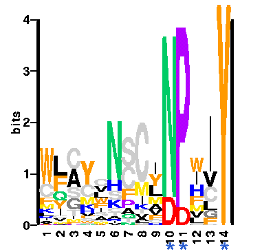

|  Fig 3.8. Typical sequence logo illustrating three highly conserved positions within a 14-residue motif. The motif runs along the x-axis, while the y-axis denotes the information content for each residue at each position. This logo shows 3 well-conserved positions (marked with a *), of which only the last is totally conserved. The colours broadly indicate residue properties - red for acidic, blue for basic, etc. |